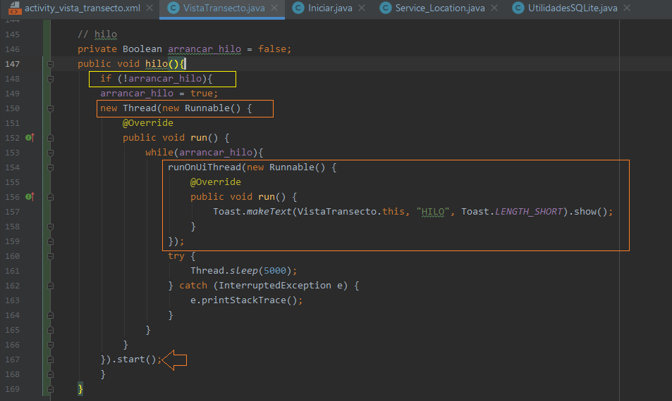

Services & Thread
Services
Un Service es un componente de una aplicación que puede
realizar operaciones de larga ejecución en segundo plano y que no proporciona una interfaz de usuario.
Para crear un servicio se debe generar una subclase Service: extends Service.
Adicionalmente, todos los servicios deben ser declarados en el Manifest, colocando una
etiqueta **service**, con los atributos: name, enable y exported (El atributo name, es el unico obligatorio)
Puedes garantizar que tu servicio esté disponible solo para tu aplicación incluyendo el atributo android:exported
y configurándolo en false. Esto impide que otras aplicaciones inicien tu servicio, incluso cuando se utiliza una
intent explícita.
Para Iniciar el servicio desde otro activity se debe invocar el metodo startService()
Colocando como parametro un intent que apunte a la clase del servicio
tambien se puede declarar como:
starService(new Intent(this, NOMBRECLASE_SERVICIO.class))
El servicio arranca con el metodo onStartCommand(Intent intent, int flags, int startId).
por lo cual las funciones a ejecutar se deben incluir en este.
Services Location
No se debe olvidar que los servicios se deben declarar en el manifest, además que tratándose de location, se debe indicar en ese mismo archivo, los permiso de acceso a fine location y agregar la implementación del API-SERVICE que se puede ver en el apartado de Map-Location
Esta es la clase con el servicio
public class Service_Location extends Service {
static final int LOCATION_SERVICE_ID = 175;
static final String ACTION_START_LOCATION_SERVICE = "Iniciar Servicio de localizacion";
static final String ACTION_STOP_LOCATION_SERVICE = "Finalizar servicio de localizacion";
private LocationCallback locationCallback = new LocationCallback() {
@Override
public void onLocationResult(LocationResult locationResult) {
super.onLocationResult(locationResult);
if (locationResult != null && locationResult.getLastLocation() != null) {
double latitude = locationResult.getLastLocation().getLatitude();
double longitude = locationResult.getLastLocation().getLongitude();
MainActivity.putValue(latitude);
Log.d("LOCATION UPDATE", latitude + ", "+longitude);
}
}
};
@Nullable
@Override
public IBinder onBind(Intent intent) {
throw new UnsupportedOperationException("Aun no esta implementado");
}
private void startLocationService(){
String channelId= "Notificacion de canal de Localizacion";
NotificationManager notificationManager =
(NotificationManager)getSystemService(Context.NOTIFICATION_SERVICE);
Intent resultIntent = new Intent();
PendingIntent pendingIntent = PendingIntent.getActivity(
getApplicationContext(),
0,
resultIntent,
PendingIntent.FLAG_UPDATE_CURRENT);
NotificationCompat.Builder builder = new NotificationCompat.Builder(
getApplicationContext(),
channelId
);
builder.setSmallIcon(R.mipmap.ic_launcher);
builder.setContentTitle("Servicio de Localizacion");
builder.setDefaults(NotificationCompat.DEFAULT_ALL);
builder.setContentText("Corriendo");
builder.setContentIntent(pendingIntent);
builder.setAutoCancel(false);
builder.setPriority(NotificationCompat.PRIORITY_MAX);
if(Build.VERSION.SDK_INT >= Build.VERSION_CODES.O){
if(notificationManager != null
&& notificationManager.getNotificationChannel(channelId) == null){
NotificationChannel notificationChannel = new NotificationChannel(
channelId,
"Location Service",
NotificationManager.IMPORTANCE_HIGH
);
notificationChannel.setDescription("Este canal es usado para el servicio de localizacion");
notificationManager.createNotificationChannel(notificationChannel);
}
}
@SuppressLint("RestrictedApi")
LocationRequest locationRequest = new LocationRequest();
locationRequest.setInterval(4000);
locationRequest.setFastestInterval(2000);
locationRequest.setPriority(LocationRequest.PRIORITY_HIGH_ACCURACY);
LocationServices.getFusedLocationProviderClient(this)
.requestLocationUpdates(locationRequest, locationCallback, Looper.getMainLooper());
startForeground(LOCATION_SERVICE_ID, builder.build());
}
private void stopLocationService(){
LocationServices.getFusedLocationProviderClient(this).removeLocationUpdates(locationCallback);
stopForeground(true);
stopSelf();
}
@Override
public int onStartCommand(Intent intent, int flags, int startId) {
if(intent != null){
String action = intent.getAction();
if(action != null){
if(action.equals(ACTION_START_LOCATION_SERVICE)){
startLocationService();
}else if(action.equals(ACTION_STOP_LOCATION_SERVICE)){
stopLocationService();
}
}
}
return super.onStartCommand(intent, flags, startId);
}
}
Este es el Main Activity que recibe, ademas arranca los permisos
public class MainActivity extends AppCompatActivity {
private static final int REQUEST_CODE_LOCATION_PERMISSION = 1;
static TextView tvlat;
@Override
protected void onCreate(Bundle savedInstanceState) {
super.onCreate(savedInstanceState);
setContentView(R.layout.activity_main);
tvlat=findViewById(R.id.tv_lat);
findViewById(R.id.btt_startLocation).setOnClickListener(new View.OnClickListener() {
@Override
public void onClick(View v) {
if(ContextCompat.checkSelfPermission(
getApplicationContext(), Manifest.permission.ACCESS_FINE_LOCATION
)!= PackageManager.PERMISSION_GRANTED){
ActivityCompat.requestPermissions(
MainActivity.this,
new String[]{Manifest.permission.ACCESS_FINE_LOCATION},
REQUEST_CODE_LOCATION_PERMISSION
);
}else{
startLocationService();
}
}
});
findViewById(R.id.btt_stopLocation).setOnClickListener(new View.OnClickListener() {
@Override
public void onClick(View v) {
stopLocationService();
}
});
}
@Override
public void onRequestPermissionsResult(int requestCode, @NonNull String[] permissions, @NonNull int[] grantResults) {
super.onRequestPermissionsResult(requestCode, permissions, grantResults);
if(requestCode == REQUEST_CODE_LOCATION_PERMISSION && grantResults.length > 0){
if(grantResults[0] == PackageManager.PERMISSION_GRANTED){
startLocationService();
}else{
Toast.makeText(this, "**Permiso negado**", Toast.LENGTH_LONG).show();
}
}
}
private boolean isLocationServiceRunning(){
ActivityManager activityManager = (ActivityManager) getSystemService(Context.ACTIVITY_SERVICE);
if(activityManager != null){
for(ActivityManager.RunningServiceInfo service:
activityManager.getRunningServices(Integer.MAX_VALUE)){
if(LocationServices.class.getName().equals(service.service.getClassName())){
if(service.foreground){
return true;
}
}
}
return false;
}
return false;
}
private void startLocationService(){
Intent intent = new Intent(getApplicationContext(), Service_Location.class);
intent.setAction(Service_Location.ACTION_START_LOCATION_SERVICE);
startService(intent);
Toast.makeText(this, "Servicio de Localizacion iniciado",Toast.LENGTH_LONG).show();
/*if(isLocationServiceRunning()){
Intent intent = new Intent(getApplicationContext(), Service_Location.class);
intent.setAction(Service_Location.ACTION_START_LOCATION_SERVICE);
startService(intent);
Toast.makeText(this, "Servicio de Localizacion iniciado",Toast.LENGTH_LONG).show();
}*/
}
private void stopLocationService(){
Intent intent = new Intent(getApplicationContext(), Service_Location.class);
intent.setAction(Service_Location.ACTION_STOP_LOCATION_SERVICE);
startService(intent);
Toast.makeText(this, "Servicio de Localizacion detenido",Toast.LENGTH_LONG).show();
/* if(isLocationServiceRunning()){
Intent intent = new Intent(getApplicationContext(), Service_Location.class);
intent.setAction(Service_Location.ACTION_STOP_LOCATION_SERVICE);
startService(intent);
Toast.makeText(this, "Servicio de Localizacion detenido",Toast.LENGTH_LONG).show();
}*/
}
public static void putValue(double latit){
tvlat.setText(String.valueOf(latit));
}
}
}
Declaracion del servicio en el manifest
service
android:name=".Service_Location"
android:enabled="true"
android:exported="false"
Thread
El hilo (Thread) nos permite correr un método en segundo plano, emplea una variable
Boolean inicializada como false, que al ser llamada por el método pasa a ser true,
que en este caso se llama arrancar_hilo.
El hilo se crea con la línea new Thread(new Runnable) a lo cual Android estudio despliega el resto
del método de manera automática. Al final se le coloca .start() , para arrancarlo
Presenta un bucle while con el cual se mantiene la acción andando y se indica la velocidad de
ejecución con Threas.sleep(5000); el método sleep genera error, a lo cual Android studio nos ofrece
envolverlo con un try-catch.
Para que se pueda colocar el envio de un texto a la interfaz gráfica desde el hilo, ya sea por Toast o
utilizando los wigets, se debe colocar el método runOnUiThread(new Runnble()..) a lo cual de manera
automática Android estudio nos despliega el método run y dentro de este colocamos el envió a la
interfaz.
private Boolean arrancar_hilo = false;
public void hilo(){
if (!arrancar_hilo){
arrancar_hilo = true;
new Thread(new Runnable() {
@Override
public void run() {
while(arrancar_hilo){
runOnUiThread(new Runnable() {
@Override
public void run() {
Toast.makeText(VistaTransecto.this, "HILO", Toast.LENGTH_SHORT).show();
}
});
try {
Thread.sleep(5000);
} catch (InterruptedException e) {
e.printStackTrace();
}
}
}
}).start();
}
}
